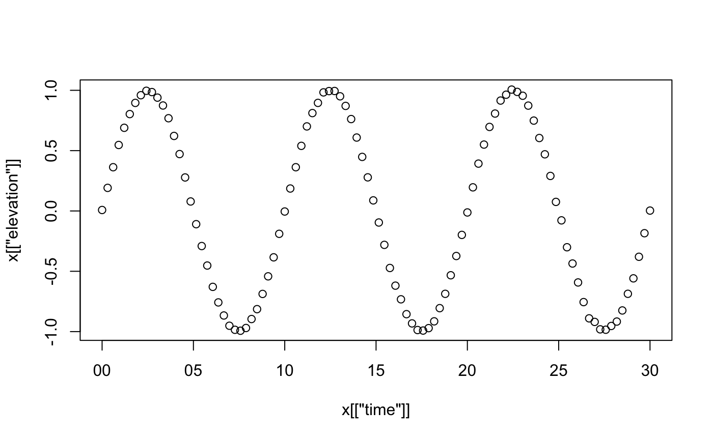

vignettes/subclassing.Rmd
subclassing.RmdAbstract. This vignette explains how new classes of objects can be created, using oce objects as a base class. The advantage of this is that the newly-formed objects will automatically have important properties of oce objects, in terms of operators such as [[ and [[<-, functions such as subset() and summary(), schemes for handling units, etc.
Oce handles a wide variety of data types, creating sub-classes the inherit from the base class that is named oce. However, even if a dataset does not fit within these sub-classes, it is still possible to use some of the features of oce, such as accessors, plotting, and summaries.
For example, suppose that there is a dataset that contains two variables, mm and ss, that have been measured at times t. Suppose that the data are recorded at a fixed location. To illustrate how to deal with such data, we first create some fake data:
lon <- -60 lat <- -30 t <- seq(as.POSIXct("2017-08-30"), as.POSIXct("2017-09-01"), by="15 min") tsec <- as.numeric(t) u <- sin(tsec * 2 * pi / (3600 * 12.4206)) v <- 0.5 * cos(tsec * 2 * pi / (3600 * 12.4206))
These may be inserted into an oce object as follows. First, create the object.
library(oce) #> Loading required package: gsw #> Loading required package: testthat o <- new("oce")
This contains slots without data:
str(o) #> Formal class 'oce' [package "oce"] with 3 slots #> ..@ metadata :List of 2 #> .. ..$ units: list() #> .. ..$ flags: list() #> ..@ data : list() #> ..@ processingLog:List of 2 #> .. ..$ time : POSIXct[1:1], format: "2020-05-03 19:06:35" #> .. ..$ value: chr "Create oce object"
As noted previously, it’s possible to insert t, u, and v directly into the data slot, but it’s better to use oceSetData to do that, because it can set up units, and it leaves a trail in the processing log.
o <- oceSetData(o, "t", t, list(unit=expression(s), scale="")) o <- oceSetData(o, "u", u, list(unit=expression(m/s), scale="")) o <- oceSetData(o, "v", v, list(unit=expression(m/s), scale=""))
Astute readers will realize that these data are akin to tidal velocities, and so might agree with the author that lon and lat belong in the metadata slot, not the data slot.
o <- oceSetMetadata(o, "longitude", lon) o <- oceSetMetadata(o, "latitude", lat)
At this stage, o is a full-fledged oce object. It may be summarized with
summary(o) #> * Data Overview #> #> Min. Mean Max. Dim. NAs OriginalName #> t [s] 1504062000 1504148400 1504234800 193 0 - #> u [m/s] -0.99982 -0.027415 1 193 0 - #> v [m/s] -0.49996 -0.0048211 0.49998 193 0 - #> #> * Processing Log #> - 2020-05-03 19:06:35 UTC: `Create oce object` #> - 2020-05-03 19:06:35 UTC: `oceSetData(object = o, name = "t", value = t, unit = list(unit = expression(s), scale = ""))` #> - 2020-05-03 19:06:35 UTC: `oceSetData(object = o, name = "u", value = u, unit = list(unit = expression(m/s), scale = ""))` #> - 2020-05-03 19:06:35 UTC: `oceSetData(object = o, name = "v", value = v, unit = list(unit = expression(m/s), scale = ""))` #> - 2020-05-03 19:06:35 UTC: `oceSetMetadata(object = o, name = "longitude", value = lon)` #> - 2020-05-03 19:06:35 UTC: `oceSetMetadata(object = o, name = "latitude", value = lat)`
and individual data components may be extracted with the [[ notation
o[["latitude"]] # from metadata #> [1] -30 head(o[["t"]]) # from data #> [1] "2017-08-30 00:00:00 ADT" "2017-08-30 00:15:00 ADT" #> [3] "2017-08-30 00:30:00 ADT" "2017-08-30 00:45:00 ADT" #> [5] "2017-08-30 01:00:00 ADT" "2017-08-30 01:15:00 ADT" head(o[["u"]]) #> [1] 0.9961884 0.9772306 0.9426639 0.8930403 0.8291526 0.7520211 head(o[["v"]]) #> [1] -0.04361357 -0.10608997 -0.16687184 -0.22498833 -0.27951117 -0.32956949
A crude plot can be done with
plot(o)
Figure 11. Crude plot of constructed oce object.
Note that the plot uses the pairs function to show how all elements of the data slot vary with each other. To customize the plot, a new object class should be created, as in the next section.
Let’s call this new object class uv. With this, inventing a new object sub-class is as simple as invoking
setClass("uv", contains="oce")
For most objects, it makes sense to define three specialized methods: one to create new objects (called "initialize"), one to plot them ("plot"), and one to summarize them ("summary").
The initialization can be handled with
setMethod(f="initialize", signature="uv", definition=function(.Object, time, u, v, longitude, latitude) { if (missing(time)) stop("must provide 'time'") ## repeat the above also for u, v, longitude, and latitude .Object@metadata$units$u <- list(unit=expression(m/s), scale="") .Object@metadata$units$v <- list(unit=expression(m/s), scale="") .Object@metadata$longitude <- longitude .Object@metadata$latitude <- latitude .Object@data$time <- time .Object@data$u <- u .Object@data$v <- v .Object@processingLog$time <- presentTime() .Object@processingLog$value <- "create 'uv' object" return(.Object) })
This is fairly arcane, but simply copying and pasting this will be enough to get the reader started. Let’s try it:
oo <- new("uv", t, u, v, lon, lat)
Next, customize summary for this new class:
setMethod(f="summary", signature="uv", definition=function(object, ...) { cat("uv Summary\n-----------\n\n", ...) cat(paste("* Location: ", sprintf("%.5f N", object@metadata$latitude), ", ", sprintf("%.5f E", object@metadata$longitude), "\n", sep='')) callNextMethod() })
The callNextMethod will summarize the entries in the data slot adequately for this case. Let’s try it:
summary(oo) #> uv Summary #> ----------- #> #> * Location: -30.00000 N, -60.00000 E #> * Time ranges from 2017-08-30 to 2017-09-01 with 193 samples and mean increment 15 min #> * Data Overview #> #> Min. Mean Max. Dim. NAs OriginalName #> u [m/s] -0.99982 -0.027415 1 193 0 - #> v [m/s] -0.49996 -0.0048211 0.49998 193 0 - #> #> * Processing Log #> - 2020-05-03 19:06:36 UTC: `create 'uv' object` #> NULL
Finally, let’s make a custom method for plot. This is usually the most complicated part of handling any new object class, because there are usually many ways to look at data. (Some oce objects have over a dozen specialized plot styles.) Let’s suppose there are only two desired plot styles: one showing timeseries of u and v in a two panel plot, and the other showing how u and v covary.
setMethod(f="plot", signature=signature("uv"), definition=function(x, which=1, ...) { if (which == 1) { oce.plot.ts(x[["time"]], x[["u"]], ylab="u [m/s]", ...) } else if (which == 2) { oce.plot.ts(x[["time"]], x[["v"]], ylab="v [m/s]", ...) } else if (which == 3) { plot(x[["u"]], x[["v"]], xlab="u [m/s]", ylab="v [m/s]", ...) } })
An now, we can try it out
Figure 12. Time-series u(t) plot of newly-constructed uv object.
plot(oo, which=3, asp=1)
Figure 13. Hodograph plot of newly-constructed uv object.
The setClass function is the key to defining a new class. Entering ?setClass in an R console reveals the details of this function, including some notes on how it has evolved since R version 3.0.
We need only a simple form here, with
library(oce) wave <- setClass(Class="wave", contains="oce")
being enough to create a new class called wave that inherits the base features of the oce class.
To create a new object that inherits from the wave class, use e.g.
w <- new("wave")
We can see that w inherits from the oce class with
class(w) #> [1] "wave" #> attr(,"package") #> [1] ".GlobalEnv"
and a check that is common to see in code is
inherits(w, "wave") #> [1] TRUE
The contents of the object are revealed with
str(w) #> Formal class 'wave' [package ".GlobalEnv"] with 3 slots #> ..@ metadata :List of 2 #> .. ..$ units: list() #> .. ..$ flags: list() #> ..@ data : list() #> ..@ processingLog:List of 2 #> .. ..$ time : POSIXct[1:1], format: "2020-05-03 19:06:36" #> .. ..$ value: chr "Create oce object"
Notice that w three oce “slots”, named metadata, data and processingLog. These are inherited from oce. The first is meant to hold information about the data, such as a file-name, an instrument number, a location of sampling, etc. The second is meant to hold actual data or measurements. And the third, not normally accessed by the user directly, holds information about the object’s evolution (note that the object considers itself an oce object). The names of these three slots are usually enough to keep them straight in the analyst’s head, although it can sometimes be difficult deciding whether something belongs in metadata or data.
The oce system also provides its objects with certain operators and functions. For example, [[ can be used to retrieve the slots, items within the slots, and (in some cases) values that may be calculated from the contents of the slots (e.g. ctd and similar objects related to hydrography can return calculated potential temperature or Conservative Temperature, even though neither is typically stored in such datasets).
That’s not the only thing. All oce objects give special powers to the [[ operator, e.g. we can retrieve the metadata slot with
w[["metadata"]] #> $units #> list() #> #> $flags #> list()
and the same for the data slot
w[["data"]] #> list()
The [[<- operator can be used to fill the slots with information, e.g. we could insert a station location of "STN01" with
w[["metadata"]]$station <- "STN01"
and verify that this worked with
str(w) #> Formal class 'wave' [package ".GlobalEnv"] with 3 slots #> ..@ metadata :List of 3 #> .. ..$ units : list() #> .. ..$ flags : list() #> .. ..$ station: chr "STN01" #> ..@ data : list() #> ..@ processingLog:List of 2 #> .. ..$ time : POSIXct[1:1], format: "2020-05-03 19:06:36" #> .. ..$ value: chr "Create oce object"
However, there is a better way to insert metadata, with the oceSetMetadata function, e.g.
w <- oceSetMetadata(w, "serialNumber", 1234)
sets the serial number to 1234, and
str(w[["metadata"]]) #> List of 4 #> $ units : list() #> $ flags : list() #> $ station : chr "STN01" #> $ serialNumber: num 1234
verifies that this worked.
Now, let’s insert some data. Imagine a half-minute dataset with 10Hz sampling, for a signal with a \(1\)m elevation wave with period \(10\)s, plus some noise of order \(1\)cm.
t <- as.POSIXct("2019-01-01 00:00:00", tz="UTC") + seq(0, 30, length.out=100) tau <- 10 e <- sin(as.numeric(2 * pi * as.numeric(t) / tau)) + rnorm(t, sd=0.01)
(Notice that we are not using the R ts form to make this time-series. This is because oceanographic data are commonly acquired on an irregular time interval, so it makes sense to store observation time explicitly, instead of using the start/step/stop approach of the ts scheme.)
These data may be inserted into our object with
w <- oceSetData(w, "time", t) w <- oceSetData(w, "elevation", e)
At this point the reader is likely to use str to see if this worked, but since the object is starting to fill up, it might make sense to use the summary function, which is inherited from oce.
summary(w) #> * Time ranges from 2019-01-01 to 2019-01-01 00:00:30 with 100 samples and mean increment 0.3030303 s #> * Data Overview #> #> Min. Mean Max. Dim. NAs OriginalName #> elevation -1.0108 -0.0015219 1.0036 100 0 - #> #> * Processing Log #> - 2020-05-03 19:06:36 UTC: `Create oce object` #> - 2020-05-03 19:06:36 UTC: `oceSetMetadata(object = w, name = "serialNumber", value = 1234)` #> - 2020-05-03 19:06:36 UTC: `oceSetData(object = w, name = "time", value = t)` #> - 2020-05-03 19:06:36 UTC: `oceSetData(object = w, name = "elevation", value = e)`
This produces a useful summary not just of the data, but also of how the object was constructed. But we can do better. In some crazy world, someone might consider measuring elevation in feet, not metres, and so we ought to specify the unit. The way to do this is with the unit argument of oceSetData. This is a somewhat tricky argument, as a study of the result of ?oceSetData will reveal. For now, we just show a common way, without explanation, writing
w <- oceSetData(w, "elevation", e, unit=list(unit=expression(m),scale=""))
This over-rides the existing definition. Now, let’s look at the summary:
summary(w) #> * Time ranges from 2019-01-01 to 2019-01-01 00:00:30 with 100 samples and mean increment 0.3030303 s #> * Data Overview #> #> Min. Mean Max. Dim. NAs OriginalName #> elevation [m] -1.0108 -0.0015219 1.0036 100 0 - #> #> * Processing Log #> - 2020-05-03 19:06:36 UTC: `Create oce object` #> - 2020-05-03 19:06:36 UTC: `oceSetMetadata(object = w, name = "serialNumber", value = 1234)` #> - 2020-05-03 19:06:36 UTC: `oceSetData(object = w, name = "time", value = t)` #> - 2020-05-03 19:06:36 UTC: `oceSetData(object = w, name = "elevation", value = e)` #> - 2020-05-03 19:06:36 UTC: `oceSetData(object = w, name = "elevation", value = e, unit = list(unit = expression(m), scale = ""))`
Notice that we now have a unit on the elevation, but we have an indication that the value of that quantity was defined twice. This processing-log feature is one of the big advantages of using oceSetData over direct insertion into an object.
The most common function to add is a plot function. Since plot is a built-in function, we are subclassing it. The details of doing this are provided by ?setMethod. Again, studying the documentation for that function would be worthwhile, but the gist is provided by a simple example, e.g.
setMethod(f="plot", signature=signature("wave"), definition=function(x, which=1, ...) { if (which == 1) { plot(x[["time"]], x[["elevation"]], ...) } else if (which == 2) { hist(x[["elevation"]], ...) } else { stop("which must be 1 or 2") } })
Here, the signature argument tells R that plot() called with a wave object as its first argument ought to use the indicated function. That function takes just two arguments: the object to be plotted, and which, an indication of the desired plot type.
For example, since which defaults to 1, we can get a popular plot with
plot(w)

Note the simplicity of this action. The user has no reason to state what kind of object this is, because R detects the type and dispatches to the specialized wave-plotting function. This may seem like a small thing in the present context, but imagine an analyst writing code to analyse a wide variety of data types: it is very convenient to have a simple function call that works for each.
Since the ... argument is passed into both the plotting methods. Thus, for example, a cleaner time-series plot might be created with
plot(w, type="l", xlab="Time [s]", ylab="Elevation [m]")
The following lets the user specify time and elevation when the object is created. It also permits a specification of units, with a default being to us metres.
setMethod(f="initialize", signature="wave", definition=function(.Object, time, elevation, units) { if (missing(units)) { .Object@metadata$units <- list() if (missing(units)) .Object@metadata$units$elevation <- list(unit=expression(m), scale="") } .Object@data$time <- if (missing(time)) NULL else time .Object@data$elevation <- if (missing(elevation)) NULL else elevation .Object@processingLog$time <- presentTime() .Object@processingLog$value <- "create 'wave' object" return(.Object) } )
A test proves that this works as hoped for.
ww <- new("wave", time=t, elevation=e) summary(ww) #> * Time ranges from 2019-01-01 to 2019-01-01 00:00:30 with 100 samples and mean increment 0.3030303 s #> * Data Overview #> #> Min. Mean Max. Dim. NAs OriginalName #> elevation [m] -1.0108 -0.0015219 1.0036 100 0 - #> #> * Processing Log #> - 2020-05-03 19:06:36 UTC: `create 'wave' object`
Notice that the units now appear, without complication to the user. Oh, and this object now knows that it is a wave object, not an oce object our little class is getting smarter by the minute!
[[ operatorAs in the previous section, the key of specializing how [[ works is to use setMethod(), but this time the function is named "[[". Suppose we want to permit e.g. w[["peak"]] as a way to find the maximum value of wave height. This becomes a call to the "[[" function, with first argument as w, and second argument as "peak". We can handle this with:
setMethod(f="[[", signature(x="wave", i="ANY", j="ANY"), definition=function(x, i, j, ...) { if (i == "peak") { return(max(x[["elevation"]], na.rm=TRUE)) } else { callNextMethod() } } )
(The details of the signature definition are explained in the documentation provided by ?setMethod, and readers ought to study that material before changing the signature definition.)
The important thing to focus on is the if block in the function definition. Called as e.g. w[["peak"]] causes i to equal "peak", and so the return value will be the maximum elevation. However, in all other instances, the return values is provided by callNextMethod(), and what that does is to dig one level deeper for a way to handle [[. At that deeper level, it finds the oce definition, the details of which can be found with ?"[[,oce-method".
The test
w[["peak"]] #> [1] 1.003601 str(w[["elevation"]]) #> num [1:100] 0.0118 0.186 0.3616 0.5487 0.6816 ...
verifies that our new code works for getting the peak value, and that it falls back to the oce code for other calls.